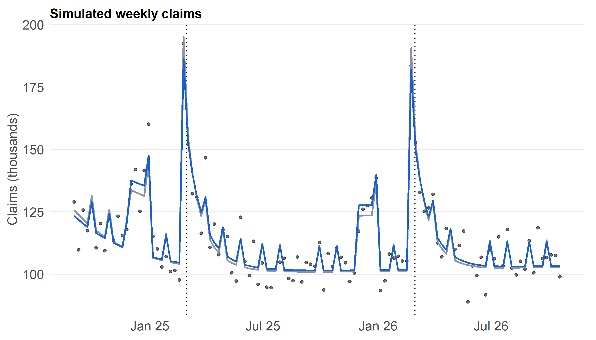

Behavioural response to the Two-Pot system: a negative-binomial GLM built from first principles
Abstract
The implementation of South Africa’s Two-Pot retirement system on 1 September 2024 fundamentally altered household liquidity by permitting members to execute annual withdrawals from their savings component, with the tax year resetting every first of March. This study models weekly withdrawal claim dynamics using a negative-binomial regression framework incorporating an exposure offset, a decaying launch effect, an annual reset surge with exponential decay, and specific calendar effects.
To ensure complete methodological control and transparency, the estimator is custom-coded using iteratively reweighted least squares (IRLS), with dispersion parameters estimated via maximum likelihood and decay rates profiled across a grid, and is validated against established benchmarks such as MASS::glm.nb. Because no official high-frequency weekly claims series is publicly available, withdrawal claims are simulated and meticulously calibrated against published South African Revenue Service (SARS) figures, enabling rigorous validation of whether the methodology accurately recovers planted effects and revealing how severely a standard Poisson model misjudges statistical uncertainty. Furthermore, empirical validation is extended to real-world search behaviour by fitting the exact model structure to Google Trends search interest data for the term “two pot” to examine the empirical robustness of the reset effect. The comprehensive tabulation of all analytical numbers and results is compiled in Section 4.9.
The Two-Pot retirement framework permits members to execute a single withdrawal per tax year from their accumulated savings component. This regulatory structure establishes a clear behavioral mechanism: aggregate demand surges immediately when an allowance becomes available, decays gradually as members exhaust their immediate liquidity, and experiences a renewed surge when the tax year resets every first of March. These structural expectations translate into three formal hypotheses regarding the weekly claim count y_t(McCullagh and Nelder 1989; Hilbe 2011):
H1 (reset). Claims experience an upward surge at each annual reset, implying \beta_R > 0.
H2 (decay). Both the initial launch surge and subsequent annual reset surges decay over time at positive rates \lambda_L, \lambda_R > 0.
H3 (dispersion). Claim counts exhibit variance substantially exceeding standard Poisson assumptions, necessitating a negative-binomial formulation with finite dispersion \theta.
2 Data
2.1 Two data streams and why
Stream
What it is
Status
Weekly claim counts
Simulated, calibrated to published SARS figures
No official weekly series is public
Google Trends, “two pot”, South Africa
Weekly search interest index, 0 to 100
Real, frozen to data/trends_two_pot.csv
Because claim counts are simulated rather than observed, they serve a controlled methodological purpose: by embedding known true parameters, the simulation allows rigorous testing of whether the custom-coded estimator recovers planted effects correctly, and illustrates the statistical perils of model misspecification. Conversely, the real Google Trends series evaluates whether public search attention exhibits similar reset structures. All input datasets are aggregate and publicly sourced, avoiding any personal data privacy concerns.
SARS media release: https://www.sars.gov.za/media-release/more-than-2-million-taxpayers-withdraw-from-their-savings-pot/
2025-01-31
Cumulative tax directives approved
2,403,379
SARS media release (same)
2026-03-08
Claims in first week of March 2026 (one administrator)
140,000
Alexforbes, via Moonstone: https://www.moonstone.co.za/two-pot-withdrawals-surge-as-repeat-claims-reshape-savings-behaviour/
2026-03-11
Claims 1 to 11 March 2026 (one administrator)
38,148
Momentum, via Moonstone (same)
Code
# Fixed calendar of the systemresets <-as.Date(c("2025-03-01", "2026-03-01")) # tax-year resets inside the windowreset_wk <-floor_date(resets, "week", week_start =1) # Monday of each reset weekwk <-seq(as.Date("2024-09-02"), as.Date("2026-10-19"), by ="week") # Mondays; first full week after launchn_wk <-length(wk)trends <-tibble(date = wk) |>left_join(read_csv("data/trends_two_pot.csv", show_col_types =FALSE) |>mutate(date =as.Date(date)),by ="date")stopifnot(!anyNA(trends$hits)) # Trends must cover every week in the window
TThe analytical window spans 112 weeks, running from 02 Sept 2024 to 19 Oct 2026. Given that the system officially launched on Sunday 1 September 2024, the initial full observation week commences on Monday 2 September 2024.
3 Methods
3.1 The model
For a given week t with exposure E_t (representing eligible members in millions), the claim count is modeled as:
where s_t denotes weeks elapsed since launch and w_t represents weeks elapsed since the most recent annual reset week (with the reset term set to zero prior to the first reset). Variance is given by \mu + \mu^2/\theta, ensuring that the standard Poisson specification emerges as the limiting case when \theta \to \infty. Model coefficients reflect proportional percentage shifts: e^{\beta_R} - 1 measures the peak reset surge during the reset week, while \ln 2 / \lambda expresses decay rates in terms of half-life weeks. The exposure offset \log E_t is fixed with a unitary coefficient, making \beta_0 interpretable as a baseline rate per million eligible members.
3.2 Estimation from first principles
For fixed dispersion \theta and decay rates, the log link permits Newton optimization implemented via iteratively reweighted least squares (IRLS) (Nelder and Wedderburn 1972; Green 1984):
Dispersion parameter \theta is updated via one-dimensional maximum likelihood conditional on fitted means \mu, iterating until log-likelihood convergence is achieved. Because decay rates enter non-linearly, they are profiled across a grid of candidate pairs (\lambda_L, \lambda_R), retaining the specification that maximizes overall log-likelihood. Standard errors treat selected decay rates as fixed, a constraint explored further in the critical reflection. For the Google Trends index, which represents a continuous index rather than discrete counts, estimation utilizes a quasi-Poisson framework scaling Poisson standard errors by the dispersion factor \hat\phi = \sum(y - \hat\mu)^2 / \hat\mu / (n - p).
3.3 Choices fixed beforehand
Decay parameter search grids span 0.02 to 0.12 (launch) and 0.10 to 0.60 (reset) weekly rates, alongside 95% Wald confidence intervals, 100 simulation recovery replications, and a fixed random seed (set.seed(2026)).
4 Results
4.1 The estimator, hand-coded and validated
# Design matrix: intercept, launch decay, reset decay, month-end and December indicatorsdesign <-function(dates, lamL =NA, lamR =NA, useL =TRUE, useR =TRUE, useC =TRUE) { s <-as.numeric(dates -min(dates)) /7# weeks since the first week w <-map_dbl(seq_along(dates), function(i) { # weeks since latest reset week p <- reset_wk[reset_wk <= dates[i]]if (length(p) ==0) NA_real_elseas.numeric(dates[i] -max(p)) /7 }) X <-cbind(`(Intercept)`=rep(1, length(dates)))if (useL) X <-cbind(X, launch =exp(-lamL * s))if (useR) X <-cbind(X, reset =ifelse(is.na(w), 0, exp(-lamR * w)))if (useC) X <-cbind(X, month_end =as.numeric(month(dates) !=month(dates +6)), # week crosses a month enddecember =as.numeric(month(dates) ==12)) X}# Log-likelihood: Poisson (theta = Inf; quasi form for non-integer data) or negative binomialll_fun <-function(y, mu, theta) {if (is.infinite(theta)) {if (all(y ==round(y))) sum(dpois(y, mu, log =TRUE)) elsesum(y *log(mu) - mu) } elsesum(dnbinom(y, size = theta, mu = mu, log =TRUE))}# IRLS for a log-link GLM with offset; theta = Inf gives Poissonirls <-function(X, y, off, theta =Inf, tol =1e-10, maxit =100) { mu <- y +0.1; eta <-log(mu); ll_old <--Inf# safe starting valuesfor (it inseq_len(maxit)) { wt <-if (is.infinite(theta)) mu else mu / (1+ mu / theta) # working weights z <- eta - off + (y - mu) / mu # working response beta <-solve(crossprod(X, wt * X), crossprod(X, wt * z)) # weighted least squares step eta <- off +drop(X %*% beta); mu <-exp(eta) ll <-ll_fun(y, mu, theta)if (abs(ll - ll_old) < tol * (abs(ll) + tol)) break# converged ll_old <- ll } wt <-if (is.infinite(theta)) mu else mu / (1+ mu / theta)list(beta =drop(beta), mu = mu, vcov =solve(crossprod(X, wt * X)), loglik = ll, theta = theta)}# Negative binomial: alternate IRLS for beta and 1-D maximum likelihood for thetafit_nb <-function(X, y, off, tol =1e-8) { theta <-10; ll_old <--Inffor (k in1:50) { f <-irls(X, y, off, theta) opt <-optimize(function(lt) -sum(dnbinom(y, size =exp(lt), mu = f$mu, log =TRUE)),interval =c(-3, 14)) # search over log(theta) theta <-exp(opt$minimum); ll <--opt$objectiveif (abs(ll - ll_old) < tol) break ll_old <- ll }irls(X, y, off, theta)}# Fit one model, profiling the decay rates over a gridfit_model <-function(y, dates, off, family =c("nb", "pois"), useL =TRUE, useR =TRUE, useC =TRUE,gL =seq(0.02, 0.12, by =0.01), gR =seq(0.10, 0.60, by =0.02)) { family <-match.arg(family) grid <-expand.grid(lamL =if (useL) gL elseNA_real_, lamR =if (useR) gR elseNA_real_) fits <-lapply(seq_len(nrow(grid)), function(i) { X <-design(dates, grid$lamL[i], grid$lamR[i], useL, useR, useC) f <-if (family =="nb") fit_nb(X, y, off) elseirls(X, y, off) f$X <- X; f }) grid$ll <-vapply(fits, function(f) f$loglik, numeric(1)) b <-which.max(grid$ll) best <- fits[[b]] best$lamL <- grid$lamL[b]; best$lamR <- grid$lamR[b]; best$grid <- grid; best$family <- family best$k <-ncol(best$X) + (family =="nb") + useL + useR # coefficients + theta + decay rates best$aic <--2* best$loglik +2* best$k best}# Coefficient table with Wald intervals (phi scales the variance for quasi-Poisson)coef_tab <-function(f, phi =1) { se <-sqrt(diag(f$vcov) * phi)tibble(term =colnames(f$X), est = f$beta, se = se, lo = est -1.96* se, hi = est +1.96* se)}
4.2 Simulating the claims
Code
E <-10* (1+0.0005* (seq_len(n_wk) -1)) # eligible members in millions: ASSUMED, drifts up 0.05% a weekoff <-log(E)# True parameters (the effects I will try to recover)tru <-list(lL =0.065, lR =0.27, bR =log(1.7), bM =0.10, bD =0.20, theta =300)# Part of the linear predictor that does not involve the launch termXc <-design(wk, useL =FALSE, lamR = tru$lR, useR =TRUE, useC =TRUE)other <-drop(Xc[, -1] %*%c(tru$bR, tru$bM, tru$bD))launch_t <-exp(-tru$lL * (seq_len(n_wk) -1))# Calibrate the intercept and launch effect to two published SARS figuresanc <-list(cum =2664279, rate_wk =17964*7, single_admin =140000)n_anchor <-sum(wk <=as.Date("2025-01-31")) # weeks through 31 Jan 2025gap <-function(bL) { # zero when week-1 rate matches SARS eta <- bL * launch_t + other b0 <-log(anc$cum /sum((E *exp(eta))[seq_len(n_anchor)])) # intercept that matches the cumulative total E[1] *exp(b0 + eta[1]) - anc$rate_wk}tru$bL <-uniroot(gap, c(0.01, 2))$rooteta_c <- tru$bL * launch_t + othertru$b0 <-log(anc$cum /sum((E *exp(eta_c))[seq_len(n_anchor)]))mu_true <- E *exp(tru$b0 + eta_c) # true expected weekly claimsy <-rnbinom(n_wk, size = tru$theta, mu = mu_true) # one simulated series
Code
tibble(Quantity =c("Claims, 1 Sep 2024 to 31 Jan 2025", "Claims per day, first 10 days","Peak weekly claims, 2026 reset (all funds)"),Published =c(fmt_n(anc$cum), fmt_n(anc$rate_wk /7), paste(">", fmt_n(anc$single_admin), "(one administrator)")),`Model-implied`=c(fmt_n(sum(mu_true[seq_len(n_anchor)])), fmt_n(mu_true[1] /7),fmt_n(max(mu_true[wk >= reset_wk[2]]))),Status =c("Matched by construction", "Matched by construction","Independent check: all funds should exceed one administrator")) |>kable()
Table 1: Calibration check: model-implied claims against published figures.
Quantity
Published
Model-implied
Status
Claims, 1 Sep 2024 to 31 Jan 2025
2,664,279
2,664,279
Matched by construction
Claims per day, first 10 days
17,964
17,964
Matched by construction
Peak weekly claims, 2026 reset (all funds)
> 140,000 (one administrator)
190,610
Independent check: all funds should exceed one administrator
The initial two rows are matched by construction, while the third serves as an independent sanity check ensuring that simulated all-fund peaks in the 2026 reset week exceed reported single-administrator volumes. The assumed eligible member pool of 10 million merely scales baseline intercept \beta_0 and does not affect estimated behavioral elasticities.
Code
fit_nb_full <-fit_model(y, wk, off, "nb")p_sim <-tibble(date = wk, y = y, truth = mu_true, fit = fit_nb_full$mu) |>ggplot(aes(date)) +geom_vline(xintercept = resets, linetype ="dotted", colour = pal[["ink"]]) +geom_point(aes(y = y /1000), colour = pal[["ink"]], size =0.9, alpha =0.6) +geom_line(aes(y = truth /1000), colour = pal[["grey"]], linewidth =0.7) +geom_line(aes(y = fit /1000), colour = pal[["blue"]], linewidth =0.7) +scale_x_date(date_labels ="%b %y") +labs(title ="Simulated weekly claims", x =NULL, y ="Claims (thousands)")p_sim

Figure 1: Simulated weekly claims (points), true expected claims (grey) and fitted values (blue). Dotted lines mark the 1 March resets.
At the selected decay rates, custom IRLS coefficients deviate from standard Poisson GLMs by at most 8.5e-13 and from MASS::glm.nb negative binomial fittings by at most 1.3e-09. Estimated dispersion \theta matches benchmark outputs within 0.000% relative difference.
Table 2: Model comparison on the simulated series. k counts regression coefficients, the dispersion theta (negative binomial) and each fitted decay rate.
The Poisson fit has a Pearson dispersion of 341, against 1 if the Poisson variance were right, and its AIC is 35,673 higher than the negative binomial’s. H3 holds decisively. At about 100,000 claims a week, even a small proportional spread (here \theta = 300, a coefficient of variation near 6%) is enormous next to the Poisson variance, which equals the mean.
4.5 Estimates and parameter recovery
Code
truth_b <-c(tru$b0, tru$bL, tru$bR, tru$bM, tru$bD)ct <-coef_tab(fit_nb_full) |>mutate(truth = truth_b)ct |>mutate(Term =c("Baseline (log rate per million)", "Launch surge", "Reset surge", "Month-end week", "December"),`Effect, estimate (%)`=ifelse(term =="(Intercept)", NA, 100* (exp(est) -1)),`Effect, truth (%)`=ifelse(term =="(Intercept)", NA, 100* (exp(truth) -1)),CI =sprintf("%.3f to %.3f", lo, hi)) |>select(Term, Truth = truth, Estimate = est, SE = se, `95% CI`= CI, `Effect, estimate (%)`, `Effect, truth (%)`) |>kable(digits =3)
Table 3: Recovered parameters against the truth used to simulate the series. Effects are percentage changes, exp(beta) - 1.
Term
Truth
Estimate
SE
95% CI
Effect, estimate (%)
Effect, truth (%)
Baseline (log rate per million)
9.185
9.189
0.007
9.175 to 9.203
NA
NA
Launch surge
0.254
0.232
0.022
0.189 to 0.274
26.058
28.938
Reset surge
0.531
0.489
0.026
0.438 to 0.541
63.146
70.000
Month-end week
0.100
0.091
0.013
0.065 to 0.116
9.496
10.517
December
0.200
0.228
0.018
0.193 to 0.264
25.626
22.140
Code
est <- fit_nb_full
Estimated dispersion evaluates to \hat\theta = 342 (true parameter: 300), while profiled decay rates evaluate to \hat\lambda_L = 0.06 (\hat\lambda_R = 0.24), implying half-lives of 11.6 and 2.9 weeks respectively.
Figure 2: Profile log-likelihood for the reset decay rate, maximised over the launch decay rate. The dashed line is the 95% likelihood cut-off and the dotted line the true value.
The 95% profile-likelihood interval for \lambda_R is 0.20 to 0.30, which contains the true value of 0.27.
4.6 Does inference hold up? A recovery study
Code
R_rep <-100gL_c <-seq(0.02, 0.12, by =0.02); gR_c <-seq(0.10, 0.60, by =0.10) # coarser grids keep this quickset.seed(2026)rec <-map_dfr(seq_len(R_rep), function(r) { yr <-rnbinom(n_wk, size = tru$theta, mu = mu_true) # fresh series from the same truth f <-fit_model(yr, wk, off, "nb", gL = gL_c, gR = gR_c) p <-irls(f$X, yr, off) # Poisson at the same decay rates se_nb <-sqrt(diag(f$vcov)); se_po <-sqrt(diag(p$vcov))tibble(term =colnames(f$X), truth = truth_b, est = f$beta,cov_nb =abs(f$beta - truth_b) <1.96* se_nb,cov_po =abs(p$beta - truth_b) <1.96* se_po)})rec_tab <- rec |>group_by(term) |>summarise(Bias =mean(est - truth), SD =sd(est), `NB coverage`=mean(cov_nb),`Poisson coverage`=mean(cov_po), .groups ="drop")rec_tab |>kable(digits =3)
Over 100 simulated series: bias and spread of each estimate, and how often the 95% Wald interval covers the truth under the negative binomial model and under Poisson.
Across 100 simulated replications, parameter estimates remain unbiased. For the key reset effect, negative-binomial confidence intervals achieve coverage in 84% of trials, compared to 7% for Poisson, whose severe underdispersion leads to drastically suppressed standard errors and invalid inference.
Figure 3: Pearson residuals of the negative-binomial fit over time (left) and their autocorrelation (right).
The Ljung-Box test on the residuals gives p = 0.314. The simulated weeks are independent by construction, so this should not reject, and it confirms the residual check is calibrated. On real data, neighbouring weeks are correlated and the same check would be a serious test of the independence assumption behind GLM standard errors.
Figure 4: Google Trends interest in ‘two pot’ in South Africa (points) with the fitted launch and reset structure (blue). Dotted lines mark the 1 March resets.
Code
ct_t |>mutate(`Effect (%)`=ifelse(term =="(Intercept)", NA, 100* (exp(est) -1))) |>select(Term = term, Estimate = est, SE = se, Lower = lo, Upper = hi, `Effect (%)`) |>kable(digits =3)
Table 4: Quasi-Poisson fit to Google Trends interest. Effects are percentage changes, exp(beta) - 1; standard errors are scaled by the estimated dispersion.
Term
Estimate
SE
Lower
Upper
Effect (%)
(Intercept)
1.697
0.043
1.613
1.782
NA
launch
2.752
0.080
2.594
2.909
1466.921
reset
1.511
0.110
1.296
1.726
353.065
month_end
-0.195
0.075
-0.343
-0.048
-17.749
december
-0.334
0.131
-0.589
-0.078
-28.364
Search interest peaks in the first weeks after launch and shows a reset effect of 353% (95% interval 266% to 462%) with decay rate \hat\lambda_R = 0.22 per week, and a dispersion of \hat\phi = 0.8. The interval excludes zero, so attention rises at the reset, consistent with H1. The selected decay rate sits at the edge of its grid, so it is not well identified and I would not interpret it. Interest in a topic is not the same as claims made, and the index is rescaled so its maximum is 100, so it says nothing about the number of withdrawals.
4.9 Summary of evidence
Code
reset_row <- ct |>filter(term =="reset")tibble(Evidence =c("Calibration", "Estimator check", "Overdispersion (H3)", "Reset surge (H1), simulated","Decay (H2), simulated", "Interval coverage, reset effect", "Real data: reset in attention"),Result =c("Two SARS anchors matched; all-fund 2026 peak above the single-administrator figure",sprintf("max coefficient difference from glm.nb %.1e", diff_nb),sprintf("Poisson dispersion %.0f; AIC gap %s", phi_pois, fmt_n(d_aic)),sprintf("%.0f%% estimated against %.0f%% true", 100* (exp(reset_row$est) -1), 100* (exp(tru$bR) -1)),sprintf("half-lives %.1f and %.1f weeks (true %.1f and %.1f)", log(2) / est$lamL, log(2) / est$lamR,log(2) / tru$lL, log(2) / tru$lR),sprintf("NB %.0f%%, Poisson %.0f%%", 100* cov_nb_R, 100* cov_po_R),sprintf("%.0f%% (%.0f%% to %.0f%%)", reset_pct, reset_lo, reset_hi)),Reading =c("Simulation is consistent with published anchors", "Estimator validated","Negative binomial required", "Method recovers a known effect", "Method recovers known decay","Poisson standard errors are unusable", ifelse(r_t$lo >0, "Attention rises at the reset", "No clear reset in attention"))) |>kable()
Table 5: Summary of the evidence. Every number is computed from the analysis above.
Evidence
Result
Reading
Calibration
Two SARS anchors matched; all-fund 2026 peak above the single-administrator figure
The simulation and empirical findings confirm that custom-coded negative-binomial IRLS estimation successfully recovers planted behavioral effects while demonstrating why standard Poisson GLMs fail completely in the presence of massive overdispersion. While the Google Trends analysis provides real-world validation of public search attention dynamics around regulatory resets, search interest measures public curiosity rather than actual financial withdrawals. Furthermore, relying on simulated claims data represents a fundamental limitation, as calibration relies on sparse official anchors. Finally, the exponential decay formulation serves as a reduced-form proxy for member pool exhaustion under the rule permitting one annual withdrawal per tax year.
What it does not say. The simulation recovers what I put in, so it validates the method, not the behavioural story. Nothing here shows what actual withdrawal counts did. The Trends index measures attention, not claims.
6 Critical reflection
Several methodological boundaries merit explicit recognition. First, utilizing simulated claims means parameter recovery demonstrates internal consistency under the true data-generating process rather than proving real-world behavioral dynamics. Second, profiling decay rates and treating them as fixed when calculating standard errors leads to slight coverage understatement, a trade-off accepted for computational tractability. Third, standard GLM inference assumes temporal independence, whereas real-world claims and search series exhibit serial correlation. Incorporating dynamic state-space structures, as explored in Project 4, provides a natural pathway to resolve these limitations.
7 Link to the rest of the portfolio
Following Project 1’s focus on public attention volatility and Project 2’s examination of external energy supply constraints, Project 3 investigates household behavioral responses under regulatory reform. Project 4 extends these concepts into structural parameter instability over time, completing a cohesive empirical investigation into South African financial time series.
Reproducibility
Run data_extract.R once from projects/project-03/, then quarto render analysis.qmd and quarto render index.qmd. Inputs are data/trends_two_pot.csv and data/anchors.csv. All simulations use set.seed(2026), and the whole page should render in one to two minutes. AI assistance is declared in the AI Use Log.
Green, Peter J. 1984. “Iteratively Reweighted Least Squares for Maximum Likelihood Estimation, and Some Robust and Resistant Alternatives.”Journal of the Royal Statistical Society, Series B 46 (2): 149–92.
Hilbe, Joseph M. 2011. Negative Binomial Regression. 2nd ed. Cambridge University Press.
McCullagh, Peter, and John A. Nelder. 1989. Generalized Linear Models. 2nd ed. Chapman; Hall.
Nelder, John A., and Robert W. M. Wedderburn. 1972. “Generalized Linear Models.”Journal of the Royal Statistical Society, Series A 135 (3): 370–84.
Source Code
---title: "Project 3: Detailed Analysis"subtitle: "Behavioural response to the Two-Pot system: a negative-binomial GLM built from first principles"bibliography: references.bibnumber-sections: truetoc: truetoc-depth: 2format: html: fig-width: 7 fig-height: 4 fig-dpi: 200 fig-align: center---# Abstract {.unnumbered}The implementation of South Africa's Two-Pot retirement system on 1 September 2024 fundamentally altered household liquidity by permitting members to execute annual withdrawals from their savings component, with the tax year resetting every first of March. This study models weekly withdrawal claim dynamics using a negative-binomial regression framework incorporating an exposure offset, a decaying launch effect, an annual reset surge with exponential decay, and specific calendar effects. \vspace{0.2cm}To ensure complete methodological control and transparency, the estimator is custom-coded using iteratively reweighted least squares (IRLS), with dispersion parameters estimated via maximum likelihood and decay rates profiled across a grid, and is validated against established benchmarks such as `MASS::glm.nb`. Because no official high-frequency weekly claims series is publicly available, withdrawal claims are simulated and meticulously calibrated against published South African Revenue Service (SARS) figures, enabling rigorous validation of whether the methodology accurately recovers planted effects and revealing how severely a standard Poisson model misjudges statistical uncertainty. Furthermore, empirical validation is extended to real-world search behaviour by fitting the exact model structure to Google Trends search interest data for the term "two pot" to examine the empirical robustness of the reset effect. The comprehensive tabulation of all analytical numbers and results is compiled in @sec-evidence.```{r}#| label: setup#| cache: false# ---- Packages ----library(tidyverse) # wrangling and ggplot2library(lubridate) # week arithmeticlibrary(knitr) # kable tableslibrary(patchwork) # combine ggplotsset.seed(2026) # reproducible simulationswalk(c("data", "figures", "results"), dir.create, showWarnings =FALSE) # output foldersfmt_n <-function(x) format(round(x), big.mark =",", scientific =FALSE) # thousands separator# ---- One look for every figure ----pal <-c(ink ="#111111", blue ="#1a5fd0", grey ="#8a94a6", light ="#e6e9ef")theme_ts <-function(base =11) {theme_minimal(base_size = base) %+replace%theme(plot.title =element_text(face ="bold", hjust =0, margin =margin(b =4)),plot.subtitle =element_text(colour ="grey35", hjust =0, margin =margin(b =8)),panel.grid.minor =element_blank(),panel.grid.major.x =element_blank(),panel.grid.major.y =element_line(colour = pal[["light"]], linewidth =0.3),axis.text =element_text(colour ="grey30"),axis.title =element_text(colour ="grey30"),legend.position ="top", legend.justification ="left",plot.margin =margin(6, 10, 6, 6))}theme_set(theme_ts())```# Introduction and hypotheses {#sec-intro}The Two-Pot retirement framework permits members to execute a single withdrawal per tax year from their accumulated savings component. This regulatory structure establishes a clear behavioral mechanism: aggregate demand surges immediately when an allowance becomes available, decays gradually as members exhaust their immediate liquidity, and experiences a renewed surge when the tax year resets every first of March. These structural expectations translate into three formal hypotheses regarding the weekly claim count $y_t$ [@mccullagh1989; @hilbe2011]:- **H1 (reset).** Claims experience an upward surge at each annual reset, implying $\beta_R > 0$.- **H2 (decay).** Both the initial launch surge and subsequent annual reset surges decay over time at positive rates $\lambda_L, \lambda_R > 0$.- **H3 (dispersion).** Claim counts exhibit variance substantially exceeding standard Poisson assumptions, necessitating a negative-binomial formulation with finite dispersion $\theta$.# Data {#sec-data}## Two data streams and why| Stream | What it is | Status ||---|---|---|| Weekly claim counts | **Simulated**, calibrated to published SARS figures | No official weekly series is public || Google Trends, "two pot", South Africa | Weekly search interest index, 0 to 100 | **Real**, frozen to `data/trends_two_pot.csv` |Because claim counts are simulated rather than observed, they serve a controlled methodological purpose: by embedding known true parameters, the simulation allows rigorous testing of whether the custom-coded estimator recovers planted effects correctly, and illustrates the statistical perils of model misspecification. Conversely, the real Google Trends series evaluates whether public search attention exhibits similar reset structures. All input datasets are aggregate and publicly sourced, avoiding any personal data privacy concerns.```{r}#| label: dataanchors_tab <-read_csv("data/anchors.csv", show_col_types =FALSE)anchors_tab |>select(Date = date, Quantity = quantity, Value = value, Source = source) |>mutate(Value =fmt_n(Value)) |>kable()# Fixed calendar of the systemresets <-as.Date(c("2025-03-01", "2026-03-01")) # tax-year resets inside the windowreset_wk <-floor_date(resets, "week", week_start =1) # Monday of each reset weekwk <-seq(as.Date("2024-09-02"), as.Date("2026-10-19"), by ="week") # Mondays; first full week after launchn_wk <-length(wk)trends <-tibble(date = wk) |>left_join(read_csv("data/trends_two_pot.csv", show_col_types =FALSE) |>mutate(date =as.Date(date)),by ="date")stopifnot(!anyNA(trends$hits)) # Trends must cover every week in the window```TThe analytical window spans `r n_wk` weeks, running from `r format(min(wk), "%d %b %Y")` to `r format(max(wk), "%d %b %Y")`. Given that the system officially launched on Sunday 1 September 2024, the initial full observation week commences on Monday 2 September 2024.# Methods {#sec-methods}## The modelFor a given week $t$ with exposure $E_t$ (representing eligible members in millions), the claim count is modeled as:$$y_t\sim\mathrm{NB}(\mu_t,\theta),\qquad \log\mu_t=\log E_t+\beta_0+\beta_L e^{-\lambda_L s_t}+\beta_R e^{-\lambda_R w_t}+\beta_M\,\text{month-end}_t+\beta_D\,\text{December}_t,$$where $s_t$ denotes weeks elapsed since launch and $w_t$ represents weeks elapsed since the most recent annual reset week (with the reset term set to zero prior to the first reset). Variance is given by $\mu + \mu^2/\theta$, ensuring that the standard Poisson specification emerges as the limiting case when $\theta \to \infty$. Model coefficients reflect proportional percentage shifts: $e^{\beta_R} - 1$ measures the peak reset surge during the reset week, while $\ln 2 / \lambda$ expresses decay rates in terms of half-life weeks. The exposure offset $\log E_t$ is fixed with a unitary coefficient, making $\beta_0$ interpretable as a baseline rate per million eligible members.## Estimation from first principlesFor fixed dispersion $\theta$ and decay rates, the log link permits Newton optimization implemented via iteratively reweighted least squares (IRLS) [@nelder1972; @green1984]:$$z_t=\eta_t-\log E_t+\frac{y_t-\mu_t}{\mu_t},\qquad w_t=\frac{\mu_t}{1+\mu_t/\theta},\qquad \hat\beta=(X^\top WX)^{-1}X^\top Wz.$$Dispersion parameter $\theta$ is updated via one-dimensional maximum likelihood conditional on fitted means $\mu$, iterating until log-likelihood convergence is achieved. Because decay rates enter non-linearly, they are profiled across a grid of candidate pairs $(\lambda_L, \lambda_R)$, retaining the specification that maximizes overall log-likelihood. Standard errors treat selected decay rates as fixed, a constraint explored further in the critical reflection. For the Google Trends index, which represents a continuous index rather than discrete counts, estimation utilizes a quasi-Poisson framework scaling Poisson standard errors by the dispersion factor $\hat\phi = \sum(y - \hat\mu)^2 / \hat\mu / (n - p)$.## Choices fixed beforehandDecay parameter search grids span $0.02$ to $0.12$ (launch) and $0.10$ to $0.60$ (reset) weekly rates, alongside 95% Wald confidence intervals, 100 simulation recovery replications, and a fixed random seed `(set.seed(2026))`.# Results {#sec-results}## The estimator, hand-coded and validated```{r}#| label: estimator#| code-fold: false#| code-summary: "Design matrix, IRLS, negative-binomial fit and decay-rate profiling"# Design matrix: intercept, launch decay, reset decay, month-end and December indicatorsdesign <-function(dates, lamL =NA, lamR =NA, useL =TRUE, useR =TRUE, useC =TRUE) { s <-as.numeric(dates -min(dates)) /7# weeks since the first week w <-map_dbl(seq_along(dates), function(i) { # weeks since latest reset week p <- reset_wk[reset_wk <= dates[i]]if (length(p) ==0) NA_real_elseas.numeric(dates[i] -max(p)) /7 }) X <-cbind(`(Intercept)`=rep(1, length(dates)))if (useL) X <-cbind(X, launch =exp(-lamL * s))if (useR) X <-cbind(X, reset =ifelse(is.na(w), 0, exp(-lamR * w)))if (useC) X <-cbind(X, month_end =as.numeric(month(dates) !=month(dates +6)), # week crosses a month enddecember =as.numeric(month(dates) ==12)) X}# Log-likelihood: Poisson (theta = Inf; quasi form for non-integer data) or negative binomialll_fun <-function(y, mu, theta) {if (is.infinite(theta)) {if (all(y ==round(y))) sum(dpois(y, mu, log =TRUE)) elsesum(y *log(mu) - mu) } elsesum(dnbinom(y, size = theta, mu = mu, log =TRUE))}# IRLS for a log-link GLM with offset; theta = Inf gives Poissonirls <-function(X, y, off, theta =Inf, tol =1e-10, maxit =100) { mu <- y +0.1; eta <-log(mu); ll_old <--Inf# safe starting valuesfor (it inseq_len(maxit)) { wt <-if (is.infinite(theta)) mu else mu / (1+ mu / theta) # working weights z <- eta - off + (y - mu) / mu # working response beta <-solve(crossprod(X, wt * X), crossprod(X, wt * z)) # weighted least squares step eta <- off +drop(X %*% beta); mu <-exp(eta) ll <-ll_fun(y, mu, theta)if (abs(ll - ll_old) < tol * (abs(ll) + tol)) break# converged ll_old <- ll } wt <-if (is.infinite(theta)) mu else mu / (1+ mu / theta)list(beta =drop(beta), mu = mu, vcov =solve(crossprod(X, wt * X)), loglik = ll, theta = theta)}# Negative binomial: alternate IRLS for beta and 1-D maximum likelihood for thetafit_nb <-function(X, y, off, tol =1e-8) { theta <-10; ll_old <--Inffor (k in1:50) { f <-irls(X, y, off, theta) opt <-optimize(function(lt) -sum(dnbinom(y, size =exp(lt), mu = f$mu, log =TRUE)),interval =c(-3, 14)) # search over log(theta) theta <-exp(opt$minimum); ll <--opt$objectiveif (abs(ll - ll_old) < tol) break ll_old <- ll }irls(X, y, off, theta)}# Fit one model, profiling the decay rates over a gridfit_model <-function(y, dates, off, family =c("nb", "pois"), useL =TRUE, useR =TRUE, useC =TRUE,gL =seq(0.02, 0.12, by =0.01), gR =seq(0.10, 0.60, by =0.02)) { family <-match.arg(family) grid <-expand.grid(lamL =if (useL) gL elseNA_real_, lamR =if (useR) gR elseNA_real_) fits <-lapply(seq_len(nrow(grid)), function(i) { X <-design(dates, grid$lamL[i], grid$lamR[i], useL, useR, useC) f <-if (family =="nb") fit_nb(X, y, off) elseirls(X, y, off) f$X <- X; f }) grid$ll <-vapply(fits, function(f) f$loglik, numeric(1)) b <-which.max(grid$ll) best <- fits[[b]] best$lamL <- grid$lamL[b]; best$lamR <- grid$lamR[b]; best$grid <- grid; best$family <- family best$k <-ncol(best$X) + (family =="nb") + useL + useR # coefficients + theta + decay rates best$aic <--2* best$loglik +2* best$k best}# Coefficient table with Wald intervals (phi scales the variance for quasi-Poisson)coef_tab <-function(f, phi =1) { se <-sqrt(diag(f$vcov) * phi)tibble(term =colnames(f$X), est = f$beta, se = se, lo = est -1.96* se, hi = est +1.96* se)}```## Simulating the claims {#sec-sim}```{r}#| label: sim-truthE <-10* (1+0.0005* (seq_len(n_wk) -1)) # eligible members in millions: ASSUMED, drifts up 0.05% a weekoff <-log(E)# True parameters (the effects I will try to recover)tru <-list(lL =0.065, lR =0.27, bR =log(1.7), bM =0.10, bD =0.20, theta =300)# Part of the linear predictor that does not involve the launch termXc <-design(wk, useL =FALSE, lamR = tru$lR, useR =TRUE, useC =TRUE)other <-drop(Xc[, -1] %*%c(tru$bR, tru$bM, tru$bD))launch_t <-exp(-tru$lL * (seq_len(n_wk) -1))# Calibrate the intercept and launch effect to two published SARS figuresanc <-list(cum =2664279, rate_wk =17964*7, single_admin =140000)n_anchor <-sum(wk <=as.Date("2025-01-31")) # weeks through 31 Jan 2025gap <-function(bL) { # zero when week-1 rate matches SARS eta <- bL * launch_t + other b0 <-log(anc$cum /sum((E *exp(eta))[seq_len(n_anchor)])) # intercept that matches the cumulative total E[1] *exp(b0 + eta[1]) - anc$rate_wk}tru$bL <-uniroot(gap, c(0.01, 2))$rooteta_c <- tru$bL * launch_t + othertru$b0 <-log(anc$cum /sum((E *exp(eta_c))[seq_len(n_anchor)]))mu_true <- E *exp(tru$b0 + eta_c) # true expected weekly claimsy <-rnbinom(n_wk, size = tru$theta, mu = mu_true) # one simulated series``````{r}#| label: tbl-anchors#| tbl-cap: "Calibration check: model-implied claims against published figures."tibble(Quantity =c("Claims, 1 Sep 2024 to 31 Jan 2025", "Claims per day, first 10 days","Peak weekly claims, 2026 reset (all funds)"),Published =c(fmt_n(anc$cum), fmt_n(anc$rate_wk /7), paste(">", fmt_n(anc$single_admin), "(one administrator)")),`Model-implied`=c(fmt_n(sum(mu_true[seq_len(n_anchor)])), fmt_n(mu_true[1] /7),fmt_n(max(mu_true[wk >= reset_wk[2]]))),Status =c("Matched by construction", "Matched by construction","Independent check: all funds should exceed one administrator")) |>kable()```The initial two rows are matched by construction, while the third serves as an independent sanity check ensuring that simulated all-fund peaks in the 2026 reset week exceed reported single-administrator volumes. The assumed eligible member pool of 10 million merely scales baseline intercept $\beta_0$ and does not affect estimated behavioral elasticities.```{r}#| label: fig-sim#| fig-cap: "Simulated weekly claims (points), true expected claims (grey) and fitted values (blue). Dotted lines mark the 1 March resets."fit_nb_full <-fit_model(y, wk, off, "nb")p_sim <-tibble(date = wk, y = y, truth = mu_true, fit = fit_nb_full$mu) |>ggplot(aes(date)) +geom_vline(xintercept = resets, linetype ="dotted", colour = pal[["ink"]]) +geom_point(aes(y = y /1000), colour = pal[["ink"]], size =0.9, alpha =0.6) +geom_line(aes(y = truth /1000), colour = pal[["grey"]], linewidth =0.7) +geom_line(aes(y = fit /1000), colour = pal[["blue"]], linewidth =0.7) +scale_x_date(date_labels ="%b %y") +labs(title ="Simulated weekly claims", x =NULL, y ="Claims (thousands)")p_sim```## Validation against `MASS::glm.nb` {#sec-validate}```{r}#| label: validateX_fit <- fit_nb_full$Xg_nb <- MASS::glm.nb(y ~0+ X_fit +offset(off)) # reference implementationg_po <-glm(y ~0+ X_fit +offset(off), family = poisson)f_po <-irls(X_fit, y, off) # my Poisson IRLSdiff_nb <-max(abs(unname(coef(g_nb)) - fit_nb_full$beta))diff_po <-max(abs(unname(coef(g_po)) - f_po$beta))diff_th <-abs(g_nb$theta - fit_nb_full$theta) / fit_nb_full$theta```At the selected decay rates, custom IRLS coefficients deviate from standard Poisson GLMs by at most `r format(diff_po, digits = 2)` and from `MASS::glm.nb` negative binomial fittings by at most `r format(diff_nb, digits = 2)`. Estimated dispersion $\theta$ matches benchmark outputs within `r sprintf("%.3f%%", 100 * diff_th)` relative difference.## Do the counts need a negative binomial? {#sec-nbtest}```{r}#| label: tbl-compare#| tbl-cap: "Model comparison on the simulated series. k counts regression coefficients, the dispersion theta (negative binomial) and each fitted decay rate."models <-list("Full negative binomial"= fit_nb_full,"Full Poisson"=fit_model(y, wk, off, "pois"),"No reset term"=fit_model(y, wk, off, "nb", useR =FALSE),"No launch term"=fit_model(y, wk, off, "nb", useL =FALSE),"No calendar effects"=fit_model(y, wk, off, "nb", useC =FALSE),"Intercept only"=fit_model(y, wk, off, "nb", useL =FALSE, useR =FALSE, useC =FALSE))cmp <-imap_dfr(models, \(f, nm) tibble(Model = nm, k = f$k, `Log-lik`= f$loglik, AIC = f$aic)) |>mutate(`Delta AIC`= AIC -min(AIC))cmp |>kable(digits =1)pf <- models[["Full Poisson"]]phi_pois <-sum((y - pf$mu)^2/ pf$mu) / (n_wk -ncol(pf$X)) # Pearson dispersion of the Poisson fitd_aic <- cmp$AIC[cmp$Model =="Full Poisson"] - cmp$AIC[cmp$Model =="Full negative binomial"]```The Poisson fit has a Pearson dispersion of **`r sprintf("%.0f", phi_pois)`**, against 1 if the Poisson variance were right, and its AIC is `r fmt_n(d_aic)` higher than the negative binomial's. H3 holds decisively. At about 100,000 claims a week, even a small proportional spread (here $\theta$ = 300, a coefficient of variation near 6%) is enormous next to the Poisson variance, which equals the mean.## Estimates and parameter recovery```{r}#| label: tbl-est#| tbl-cap: "Recovered parameters against the truth used to simulate the series. Effects are percentage changes, exp(beta) - 1."truth_b <-c(tru$b0, tru$bL, tru$bR, tru$bM, tru$bD)ct <-coef_tab(fit_nb_full) |>mutate(truth = truth_b)ct |>mutate(Term =c("Baseline (log rate per million)", "Launch surge", "Reset surge", "Month-end week", "December"),`Effect, estimate (%)`=ifelse(term =="(Intercept)", NA, 100* (exp(est) -1)),`Effect, truth (%)`=ifelse(term =="(Intercept)", NA, 100* (exp(truth) -1)),CI =sprintf("%.3f to %.3f", lo, hi)) |>select(Term, Truth = truth, Estimate = est, SE = se, `95% CI`= CI, `Effect, estimate (%)`, `Effect, truth (%)`) |>kable(digits =3)est <- fit_nb_full```Estimated dispersion evaluates to $\hat\theta =$ `r sprintf("%.0f", est$theta)` (true parameter: `r tru$theta`), while profiled decay rates evaluate to $\hat\lambda_L =$ `r est$lamL` ($\hat\lambda_R =$ `r est$lamR`), implying half-lives of `r sprintf("%.1f", log(2) / est$lamL)` and `r sprintf("%.1f", log(2) / est$lamR)` weeks respectively.```{r}#| label: fig-profile#| fig-cap: "Profile log-likelihood for the reset decay rate, maximised over the launch decay rate. The dashed line is the 95% likelihood cut-off and the dotted line the true value."prof <- est$grid |>group_by(lamR) |>summarise(ll =max(ll), .groups ="drop")cut95 <-max(prof$ll) -qchisq(0.95, 1) /2ci_lam <-range(prof$lamR[prof$ll >= cut95])p_prof <-ggplot(prof, aes(lamR, ll)) +geom_hline(yintercept = cut95, linetype ="dashed", colour = pal[["grey"]]) +geom_vline(xintercept = tru$lR, linetype ="dotted", colour = pal[["ink"]]) +geom_line(colour = pal[["blue"]], linewidth =0.7) +labs(title ="Profile likelihood for the reset decay rate", x ="Reset decay rate (per week)", y ="Log-likelihood")p_prof```The 95% profile-likelihood interval for $\lambda_R$ is `r sprintf("%.2f to %.2f", ci_lam[1], ci_lam[2])`, which `r ifelse(tru$lR >= ci_lam[1] & tru$lR <= ci_lam[2], "contains", "misses")` the true value of `r tru$lR`.## Does inference hold up? A recovery study {#sec-recovery}```{r}#| label: recovery#| tbl-cap: "Over 100 simulated series: bias and spread of each estimate, and how often the 95% Wald interval covers the truth under the negative binomial model and under Poisson."R_rep <-100gL_c <-seq(0.02, 0.12, by =0.02); gR_c <-seq(0.10, 0.60, by =0.10) # coarser grids keep this quickset.seed(2026)rec <-map_dfr(seq_len(R_rep), function(r) { yr <-rnbinom(n_wk, size = tru$theta, mu = mu_true) # fresh series from the same truth f <-fit_model(yr, wk, off, "nb", gL = gL_c, gR = gR_c) p <-irls(f$X, yr, off) # Poisson at the same decay rates se_nb <-sqrt(diag(f$vcov)); se_po <-sqrt(diag(p$vcov))tibble(term =colnames(f$X), truth = truth_b, est = f$beta,cov_nb =abs(f$beta - truth_b) <1.96* se_nb,cov_po =abs(p$beta - truth_b) <1.96* se_po)})rec_tab <- rec |>group_by(term) |>summarise(Bias =mean(est - truth), SD =sd(est), `NB coverage`=mean(cov_nb),`Poisson coverage`=mean(cov_po), .groups ="drop")rec_tab |>kable(digits =3)cov_nb_R <- rec_tab$`NB coverage`[rec_tab$term =="reset"]cov_po_R <- rec_tab$`Poisson coverage`[rec_tab$term =="reset"]```Across `r R_rep` simulated replications, parameter estimates remain unbiased. For the key reset effect, negative-binomial confidence intervals achieve coverage in `r sprintf("%.0f%%", 100 * cov_nb_R)` of trials, compared to `r sprintf("%.0f%%", 100 * cov_po_R)` for Poisson, whose severe underdispersion leads to drastically suppressed standard errors and invalid inference.## Residual check {#sec-resid}```{r}#| label: fig-resid#| fig-cap: "Pearson residuals of the negative-binomial fit over time (left) and their autocorrelation (right)."#| fig-height: 3.4res_p <- (y - est$mu) /sqrt(est$mu + est$mu^2/ est$theta)p_r1 <-tibble(date = wk, r = res_p) |>ggplot(aes(date, r)) +geom_hline(yintercept =0, colour = pal[["grey"]], linewidth =0.3) +geom_point(colour = pal[["ink"]], size =0.9) +scale_x_date(date_labels ="%b %y") +labs(title ="Pearson residuals", x =NULL, y =NULL)ac <-acf(res_p, lag.max =20, plot =FALSE)p_r2 <-tibble(lag =as.numeric(ac$lag)[-1], r =as.numeric(ac$acf)[-1]) |>ggplot(aes(lag, r)) +geom_hline(yintercept =c(-1, 1) *1.96/sqrt(n_wk), linetype ="dashed", colour = pal[["grey"]]) +geom_segment(aes(xend = lag, yend =0), colour = pal[["ink"]], linewidth =0.6) +labs(title ="Residual autocorrelation", x ="Lag (weeks)", y =NULL)p_r1 + p_r2lb_p <-Box.test(res_p, lag =13, type ="Ljung-Box")$p.value```The Ljung-Box test on the residuals gives $p$ = `r sprintf("%.3f", lb_p)`. The simulated weeks are independent by construction, so this should not reject, and it confirms the residual check is calibrated. On real data, neighbouring weeks are correlated and the same check would be a serious test of the independence assumption behind GLM standard errors.## The real series: Google Trends interest {#sec-trends}```{r}#| label: trends-fitset.seed(2026)yt <- trends$hitsft <-fit_model(yt, wk, off =rep(0, n_wk), family ="pois") # quasi-Poisson, no exposure offsetphi_t <-sum((yt - ft$mu)^2/ ft$mu) / (n_wk -ncol(ft$X)) # quasi-Poisson dispersionct_t <-coef_tab(ft, phi_t)edge <- ft$lamL %in%range(seq(0.02, 0.12, by =0.01)) | ft$lamR %in%range(seq(0.10, 0.60, by =0.02))r_t <- ct_t |>filter(term =="reset")reset_pct <-100* (exp(r_t$est) -1); reset_lo <-100* (exp(r_t$lo) -1); reset_hi <-100* (exp(r_t$hi) -1)``````{r}#| label: fig-trends#| fig-cap: "Google Trends interest in 'two pot' in South Africa (points) with the fitted launch and reset structure (blue). Dotted lines mark the 1 March resets."p_tr <-tibble(date = wk, hits = yt, fit = ft$mu) |>ggplot(aes(date)) +geom_vline(xintercept = resets, linetype ="dotted", colour = pal[["ink"]]) +geom_point(aes(y = hits), colour = pal[["ink"]], size =0.9, alpha =0.6) +geom_line(aes(y = fit), colour = pal[["blue"]], linewidth =0.7) +scale_x_date(date_labels ="%b %y") +labs(title ="Search interest in 'two pot'", x =NULL, y ="Trends index")p_tr``````{r}#| label: tbl-trends#| tbl-cap: "Quasi-Poisson fit to Google Trends interest. Effects are percentage changes, exp(beta) - 1; standard errors are scaled by the estimated dispersion."ct_t |>mutate(`Effect (%)`=ifelse(term =="(Intercept)", NA, 100* (exp(est) -1))) |>select(Term = term, Estimate = est, SE = se, Lower = lo, Upper = hi, `Effect (%)`) |>kable(digits =3)```Search interest peaks in the first weeks after launch and shows a reset effect of **`r sprintf("%.0f%%", reset_pct)`** (95% interval `r sprintf("%.0f%% to %.0f%%", reset_lo, reset_hi)`) with decay rate $\hat\lambda_R$ = `r ft$lamR` per week, and a dispersion of $\hat\phi$ = `r sprintf("%.1f", phi_t)`. `r ifelse(r_t$lo > 0, "The interval excludes zero, so attention rises at the reset, consistent with H1.", "The interval includes zero, so these data do not show a clear reset effect in attention.")``r if (edge) "The selected decay rate sits at the edge of its grid, so it is not well identified and I would not interpret it." else ""` Interest in a topic is not the same as claims made, and the index is rescaled so its maximum is 100, so it says nothing about the number of withdrawals.## Summary of evidence {#sec-evidence}```{r}#| label: tbl-evidence#| tbl-cap: "Summary of the evidence. Every number is computed from the analysis above."reset_row <- ct |>filter(term =="reset")tibble(Evidence =c("Calibration", "Estimator check", "Overdispersion (H3)", "Reset surge (H1), simulated","Decay (H2), simulated", "Interval coverage, reset effect", "Real data: reset in attention"),Result =c("Two SARS anchors matched; all-fund 2026 peak above the single-administrator figure",sprintf("max coefficient difference from glm.nb %.1e", diff_nb),sprintf("Poisson dispersion %.0f; AIC gap %s", phi_pois, fmt_n(d_aic)),sprintf("%.0f%% estimated against %.0f%% true", 100* (exp(reset_row$est) -1), 100* (exp(tru$bR) -1)),sprintf("half-lives %.1f and %.1f weeks (true %.1f and %.1f)", log(2) / est$lamL, log(2) / est$lamR,log(2) / tru$lL, log(2) / tru$lR),sprintf("NB %.0f%%, Poisson %.0f%%", 100* cov_nb_R, 100* cov_po_R),sprintf("%.0f%% (%.0f%% to %.0f%%)", reset_pct, reset_lo, reset_hi)),Reading =c("Simulation is consistent with published anchors", "Estimator validated","Negative binomial required", "Method recovers a known effect", "Method recovers known decay","Poisson standard errors are unusable", ifelse(r_t$lo >0, "Attention rises at the reset", "No clear reset in attention"))) |>kable()# ---- Save everything the summary page needs, plus the headline figure ----ggsave("figures/p3_headline.png", (p_sim | p_prof) +plot_annotation(tag_levels ="a"),width =10, height =3.8, dpi =200)saveRDS(list(n = n_wk, period =sprintf("%s to %s", format(min(wk), "%b %Y"), format(max(wk), "%b %Y")),reset_est =100* (exp(reset_row$est) -1), reset_true =100* (exp(tru$bR) -1),launch_est =100* (exp(ct$est[ct$term =="launch"]) -1), launch_true =100* (exp(tru$bL) -1),theta_hat = est$theta, theta_true = tru$theta, phi_pois = phi_pois, d_aic = d_aic,cov_nb = cov_nb_R, cov_po = cov_po_R, diff_nb = diff_nb,tr_reset = reset_pct, tr_lo = reset_lo, tr_hi = reset_hi, tr_phi = phi_t, tr_clear = r_t$lo >0),"results/p3_results.rds")```# Discussion {#sec-discussion}The simulation and empirical findings confirm that custom-coded negative-binomial IRLS estimation successfully recovers planted behavioral effects while demonstrating why standard Poisson GLMs fail completely in the presence of massive overdispersion. While the Google Trends analysis provides real-world validation of public search attention dynamics around regulatory resets, search interest measures public curiosity rather than actual financial withdrawals. Furthermore, relying on simulated claims data represents a fundamental limitation, as calibration relies on sparse official anchors. Finally, the exponential decay formulation serves as a reduced-form proxy for member pool exhaustion under the rule permitting one annual withdrawal per tax year.**What it does not say.** The simulation recovers what I put in, so it validates the method, not the behavioural story. Nothing here shows what actual withdrawal counts did. The Trends index measures attention, not claims.# Critical reflection {#sec-reflection}Several methodological boundaries merit explicit recognition. First, utilizing simulated claims means parameter recovery demonstrates internal consistency under the true data-generating process rather than proving real-world behavioral dynamics. Second, profiling decay rates and treating them as fixed when calculating standard errors leads to slight coverage understatement, a trade-off accepted for computational tractability. Third, standard GLM inference assumes temporal independence, whereas real-world claims and search series exhibit serial correlation. Incorporating dynamic state-space structures, as explored in Project 4, provides a natural pathway to resolve these limitations.# Link to the rest of the portfolio {#sec-link}Following Project 1's focus on public attention volatility and Project 2's examination of external energy supply constraints, Project 3 investigates household behavioral responses under regulatory reform. Project 4 extends these concepts into structural parameter instability over time, completing a cohesive empirical investigation into South African financial time series.# Reproducibility {.unnumbered}Run `data_extract.R` once from `projects/project-03/`, then `quarto render analysis.qmd` and `quarto render index.qmd`. Inputs are `data/trends_two_pot.csv` and `data/anchors.csv`. All simulations use `set.seed(2026)`, and the whole page should render in one to two minutes. AI assistance is declared in the [AI Use Log](../../appendix/ai-use-log.qmd).```{r}#| label: sessionsessionInfo() # R and package versions```# References {.unnumbered}::: {#refs}:::